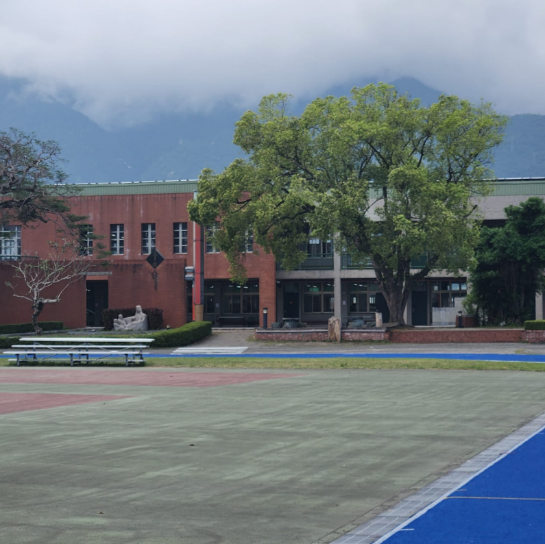

我的新朋友叫 Mahwa，他今年17岁了。他在Stella Maris 学校读书。他的生日是2月24日2005年 。Mahwa 长得又高又帅。他个子很高， 大概有1.8米。他长得又不瘦又不胖。他的脸是方脸的 ，鼻子也是高高的 ，眼睛小小的，耳朵小小的，眉毛粗，最后他的嘴巴小小的。Mahwa最喜欢吃小笼包。他的爱好是唱歌。
我的新朋友叫 Mahwa，他今年17岁了。他在Stella Maris 学校读书。他的生日是2月24日2005年 。Mahwa 长得又高又帅。他个子很高， 大概有1.8米。他长得又不瘦又不胖。他的脸是方脸的 ，鼻子也是高高的 ，眼睛小小的，耳朵小小的，眉毛粗，最后他的嘴巴小小的。Mahwa最喜欢吃小笼包。他的爱好是唱歌。
我们去很多地方但是我最喜欢去西门町。我最喜欢去夜市应为在那里有很多食品。在哪里我吃了很多食物，在那里，我学会了明智地花钱。
